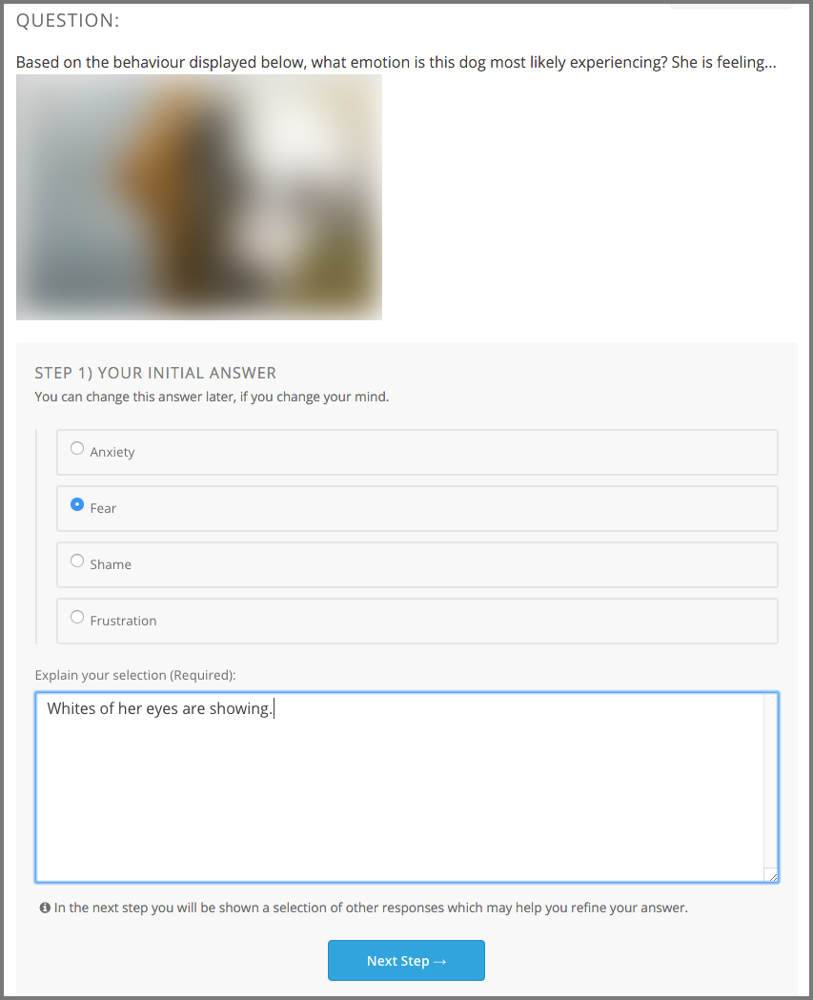
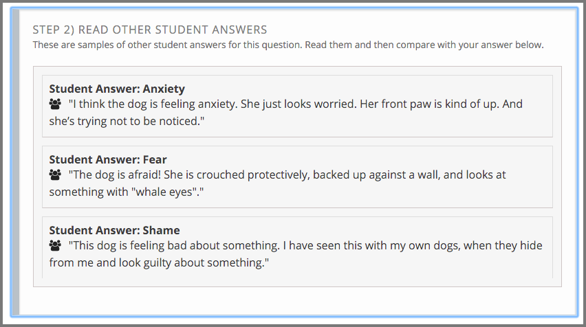
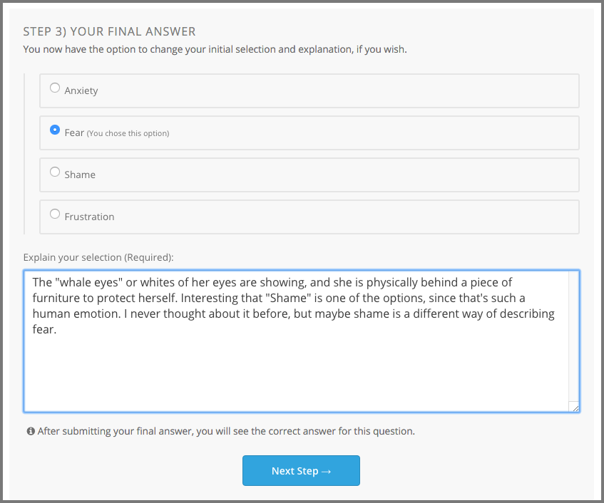
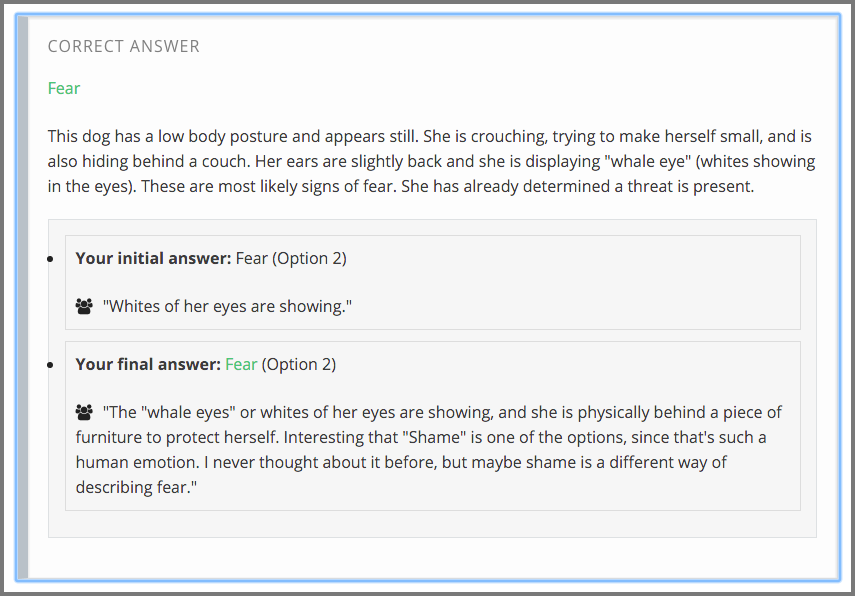
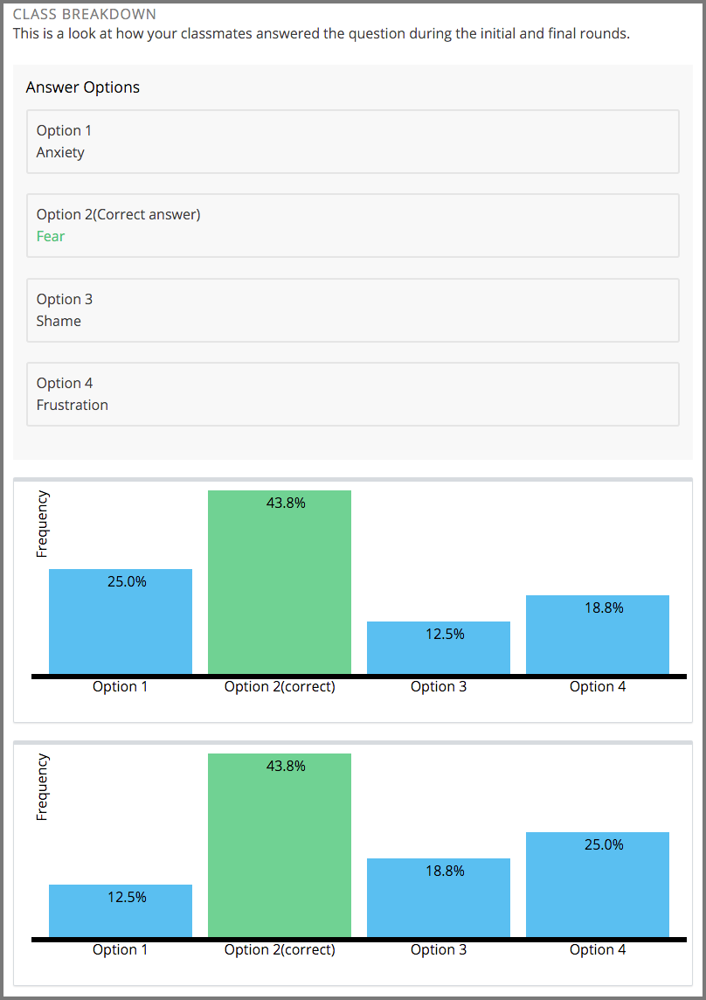

12.4. Explaining Multiple Choice Answers#
If you encounter a multiple choice question that is followed by a field for an explanation, there are actually several more steps that you need to complete for the assignment. These assignments involve sharing what you have learned with other people in your online course. They give you an opportunity to learn from each other.
In a classroom setting, this type of assignment is sometimes called a “peer instruction” or “clicker” question.
This section describes how you complete these interactive assignments.
12.4.1. Assignment Overview#
When a multiple choice question also requires an explanation, the next step in the assignment is to share your rationale for your answer with other learners, and to see the choices and explanation that other learners shared.
Names are not shown with the responses. As a result, you can focus on contributing the best answer possible, without worrying about whether your reasoning, or your spelling, is exactly correct.
Then, you get to apply what you learned from the others: you have another chance to answer the question.
12.4.2. Completing the Assignment#
In this type of assignment, you see a multiple choice question. After you select an answer you complete these steps.
12.4.2.1. Step 1. Explain Your Choice#
Write an explanation for why you chose your answer.
This step is your opportunity to provide a persuasive argument about why your answer is the correct one. You might include references to a course video or textbook, or describe how you arrived at the choice you made.
Together, the answer that you chose and this explanation are your initial response. When you select Next, your initial response is added to the collection of initial responses by all of the other course participants.
{kind=link}
12.4.2.2. Step 2. Review Other Initial Responses#
Review the initial responses that other participants in the course submitted. The course team decides how many you see. You might see one response for each of the possible answer choices, or a set that is chosen completely at random.
This step gives you a chance to learn from the explanations that other learners submitted, and reassess your own understanding of the topic.
Because they are part of the collection of initial responses, your answer and explanation are likely to be shown to other learners when they get to this part of the assignment.
{kind=link}
12.4.2.3. Step 3. Revise Your Response#
Decide whether you want to change your initial response by selecting a different answer choice, revising your explanation, or both.
This step is optional. You can submit a final response that is the same as your initial response, or change it completely. When you select Next Step, you learn the correct answer.
{kind=link}
12.4.2.4. Step 4. Review the Correct Answer#
Review the correct answer choice and the explanation provided by the course team.
{kind=link}
12.4.2.5. Step 5. Compare Answers#
Use the graphs to compare the percentage of your fellow learners who selected each answer. The first graph shows the percentage of learners who selected each answer initially, and the second graph shows the percentage of learners who selected each answer after they had the opportunity to review the explantions that other learners provided. Compare your own choices, and the correct one, to your peers’.
This step might be just as thought provoking as the other steps.
{kind=link}
Note
The graphs appear after 10 learners submit their final responses. If the graphs do not appear, give the others taking the course some time, and then refresh your browser page.